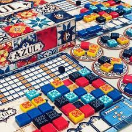

Azul
Perfeito para jogadores casuais ou que estão adentrando esse mundo, Azul é um jogo de estratégia simples com pardidas curtas e ideal para jogar com amigos e família.
Nesse jogo, o objetivo é decorar as paredes do Palácio de Évora com lindos azulejos portugueses. Os jogadores devem se revezar,comprando tiles para cada tabuleiro que depois serão avaliados por sua organização, sendo que ganha o jogador com mais pontos ao final da partida.| Idade indicada | Número de jogadores | Duração da partida | Preço |
|---|---|---|---|
| +14 anos | 2 a 4 jogadores | 30 minutos | 329,99 reais |